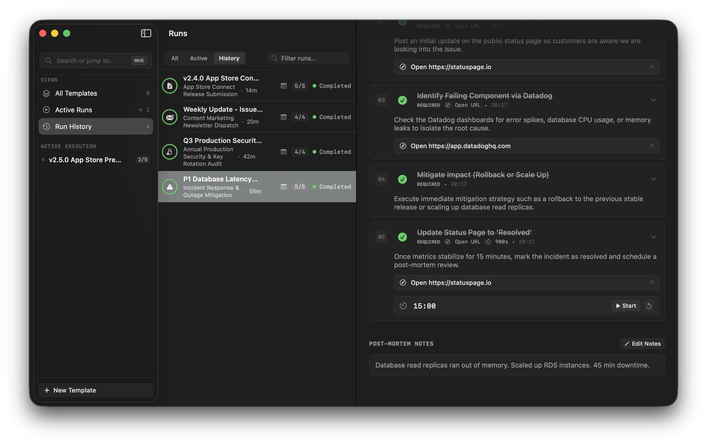
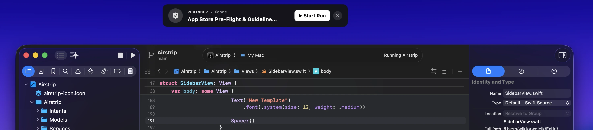
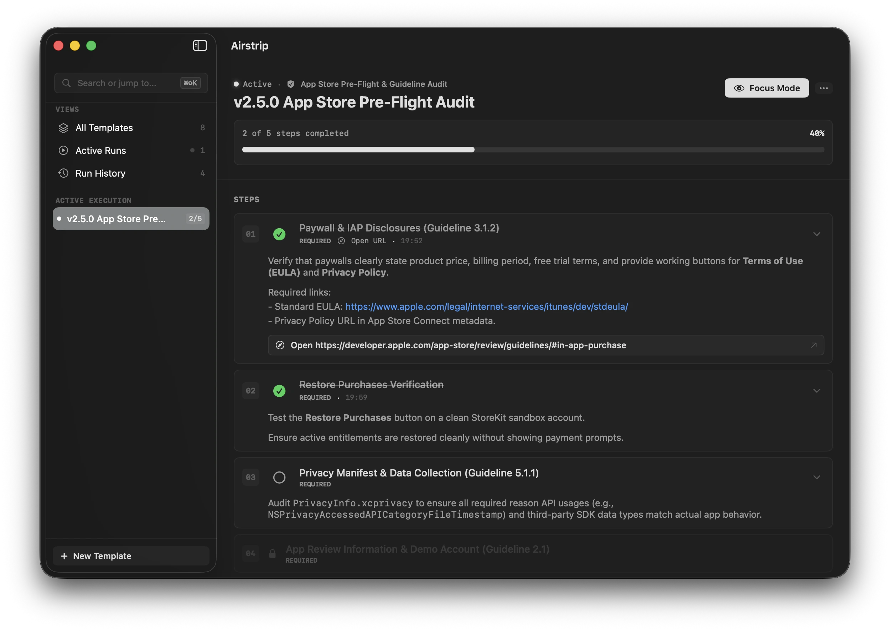
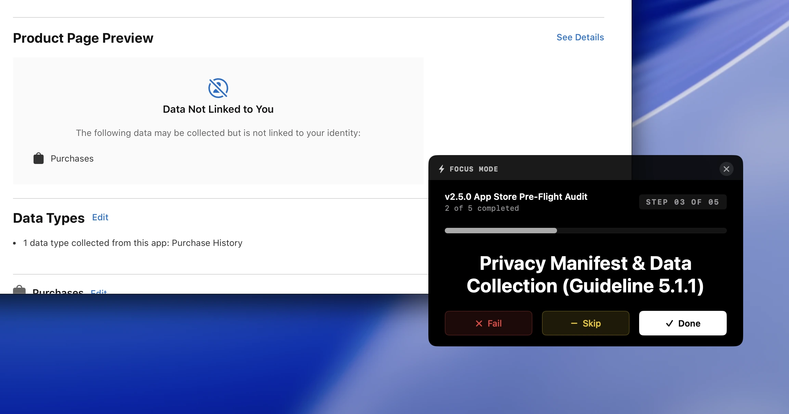
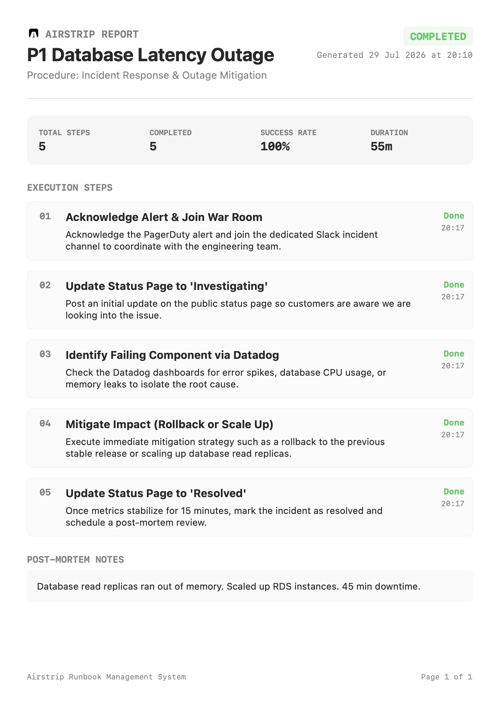
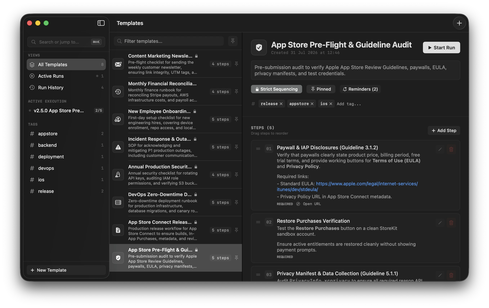
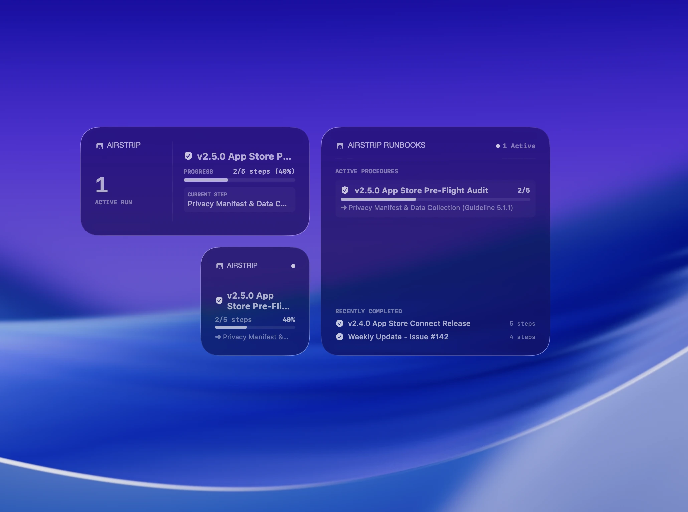

Runbooks for critical work.
Run releases, migrations, and maintenance step by step on your Mac. Know what to do next and keep a record of what happened.

From opening Xcode to signing off a release.
Follow an App Store privacy check through Airstrip.
Get the runbook when you open Xcode.
Context Observers can suggest a procedure when you open an app or visit a domain you’ve configured. The prompt sits above your work, ready when you are.

Keep the current step in sight.
See the full checklist in Airstrip, then switch to Focus Mode to keep just the current step above App Store Connect.


See what actually happened.
Revisit the steps, timestamps, durations, and notes from a completed run. Export Markdown for a ticket or a PDF to share with a reviewer.

A blueprint you can improve. A history you can trust.
Define the procedure once with ordered steps, Markdown instructions, and actions. Each run keeps its own snapshot, even when you edit the blueprint later.

- Launch variables
- Set values like
{{version}}and{{environment}}when you start a run. - Step actions
- Open the right dashboard, copy a command, or start a timer for a verification window.
- Execution history
- Keep the instructions and results from each run together for handoffs and reviews.
Give your coding assistant the procedure.
Airstrip’s MCP server lets compatible assistants such as Cursor and Claude Desktop find runbooks, start runs, and inspect the current step. Keep the same procedure available whether you’re working directly or with an assistant.
- Find the release runbook
- Start a run in Airstrip
- Read the current step
Your runs, on your desktop.
Open pinned procedures from the menu bar. See active runs in a desktop widget. Airstrip works offline and supports optional iCloud sync across your Macs.

Start from a runbook you can use.
Browse all templates →Common questions.
How is Airstrip different from Notion or Confluence?
Documentation tools store static knowledge that gets edited over time. Airstrip is the execution layer: it turns procedures into interactive runs, keeps you focused with a floating overlay, surfaces context automatically, and creates immutable execution logs for every run.
Is Airstrip an enterprise automation or incident platform?
No. Enterprise platforms like PagerDuty or Rootly focus on organizational incident routing and cloud orchestration. Airstrip is a lightweight, personal, local Mac tool built for the person actually executing the procedure on their machine.
Does Airstrip execute arbitrary shell commands automatically?
No. Airstrip does not autonomously alter your infrastructure without your knowledge. Steps contain interactive actions like Copy Text, Open URL, and Duration Timers so you can execute steps with full human-in-the-loop control.
How does Focus Mode work?
Focus Mode opens a compact, borderless floating window that stays pinned above applications like Xcode, VS Code, or terminal. You can mark steps as Done, Skip, or Fail using keyboard shortcuts without switching back to a documentation app.
What are Context Observers?
Airstrip monitors active window focus and browser domain names locally. When it detects a matching app (e.g., Xcode) or web domain (e.g., your staging environment), it displays a discreet banner offering to launch the relevant runbook.
What happens to past execution records when I modify a blueprint?
Nothing. Airstrip uses a deep-copy snapshot architecture. When a run is initiated, the blueprint is copied into an independent execution record. Updating the master template later will never alter past run history.
How do AI agents use Airstrip via Model Context Protocol (MCP)?
Airstrip exposes an MCP interface that AI coding tools (such as Claude Desktop or Cursor) can query. Your AI agent can inspect procedure steps, initiate runs, and follow defined runbook steps with full human oversight.
Does Airstrip work offline?
Yes. Airstrip is a native macOS application that operates 100% offline. Your runbooks and execution history reside on your Mac.
Does it sync across Macs via iCloud?
Yes. Built natively for Apple platforms, Airstrip syncs your blueprints, active runs, and contextual observer rules seamlessly via iCloud.
Is there a free trial?
Yes. Airstrip is available on the Mac App Store with a 14-day free trial so you can test executable runbooks before subscribing.